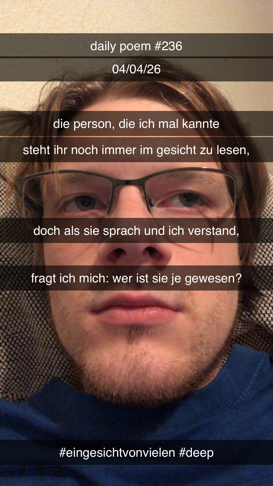

Ein Gesicht, eines von vielen
[236]Die Person, die ich mal kannte
Steht ihr noch immer im Gesicht zu lesen,
Doch als sie sprach und ich verstand,
Fragt ich mich: Wer ist sie je gewesen?

Die Person, die ich mal kannte
Steht ihr noch immer im Gesicht zu lesen,
Doch als sie sprach und ich verstand,
Fragt ich mich: Wer ist sie je gewesen?

Anmerkungen
Inspiriert davon, dass ich Maje Beeneken beim Osterfeuer gesehen habe und wieder mal dieses Gefühl hatte, wenn man näher über Menschen nachdenkt, die für eine Zeit lang einfach als Selbstverständlichkeit in einer NPC-Rolle um einen herum existiert haben.